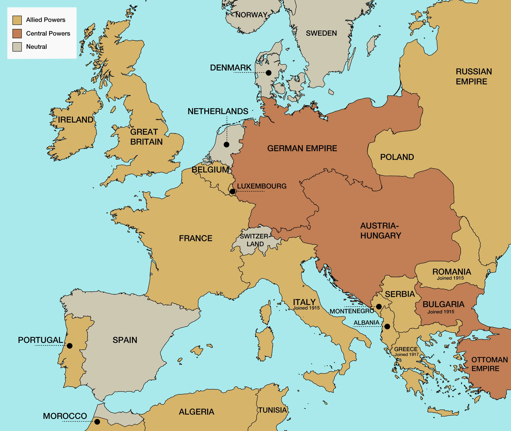

Dardanellu kampaņa (Gallipoli) – Sabiedrotie (Lielbritānija un Francija) mēģināja iegūt kontroli pār Dardaneļiem, lai palīdzētu Krievijai un atvērtu jaunu fronti, taču kampaņa beidzās ar lieliem zaudējumiem un sabiedroto neveiksmi.
Jūlija uzbrukums pie Verdunas – Vācijas uzbrukumi sākās pie Verdunas, kurā Francija turpināja izturēt uzbrukumus, un šīs kaujas kļuva par simbolu franču izturībai un upuriem, kas ilga līdz 1916. gadam.
Zemūdenes karadarbība – Vācija turpināja neierobežoto zemūdenes karadarbību, uzbrūkot sabiedroto kuģiem, kas radīja lielus zaudējumus un pasliktināja tirdzniecību.
Krievijas neveiksmes austrumu frontē – Vācija un Austroungārija veica veiksmīgus uzbrukumus Krievijai, iznīcinot lielas teritorijas un vājinot Krievijas militāro spēku.
Rietumu fronte – Kaujas pie rietumu frontes turpinājās, taču frontes līnijas lielākoties palika nemainīgas. Lielās cilvēku upurēšanas un statiskās cīņas turpinājās.
Kaujas lidmašīnas – Tās kļuva par svarīgu karadarbības instrumentu, īpaši izlūkošanā un gaisa kaujās.
Ķīmiskie ieroči – Vācija pirmo reizi izmantoja hloru pie Ypres, ieviešot jaunu un bīstamu kaujas metodi.
Tanks – Lielbritānija uzsāka tanku attīstību, lai pārvarētu tranšejas un ierakumus.
Zemūdenes – Vācijas zemūdenes tika izmantotas sabiedroto tirdzniecības bloķēšanai un uzlabošanai.
Radiotehnoloģija – Radio komunikācija tika izmantota, lai uzlabotu saziņu un izlūkošanu
 Vairāk Informācijas